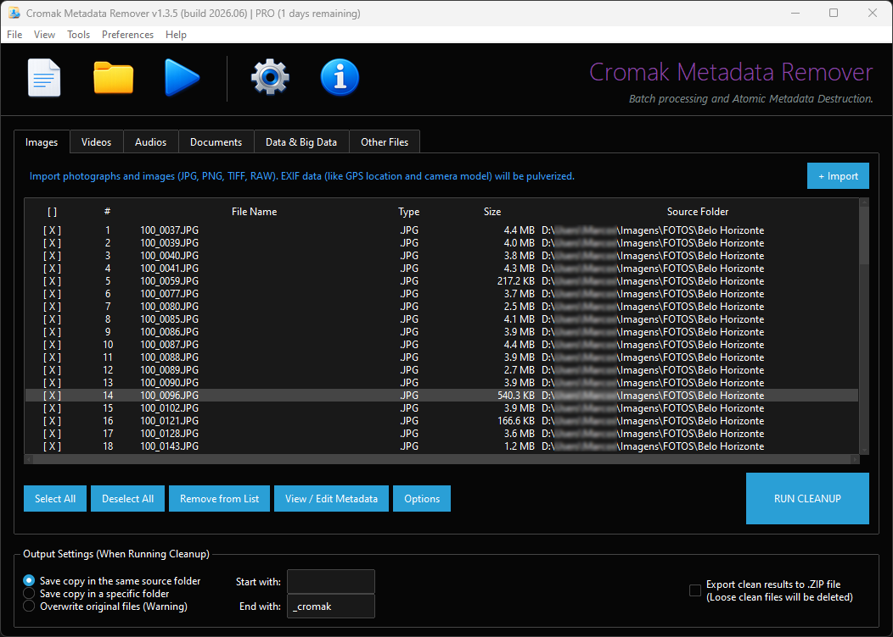
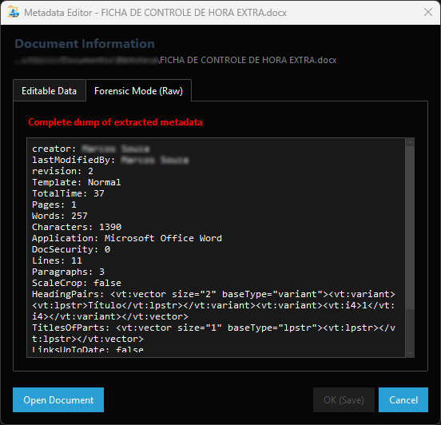
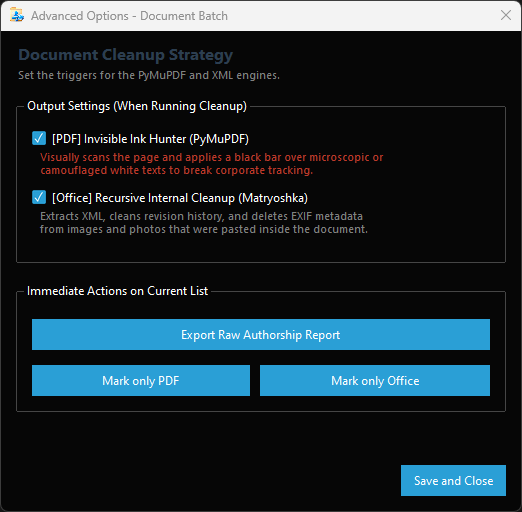
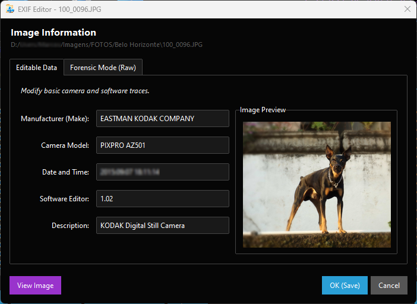
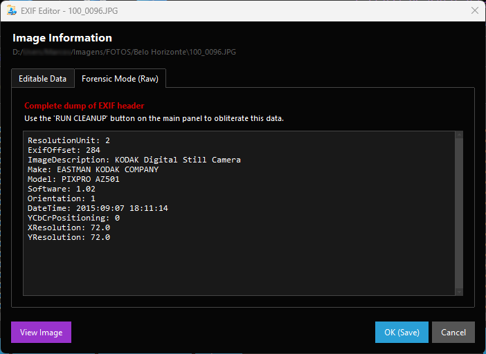
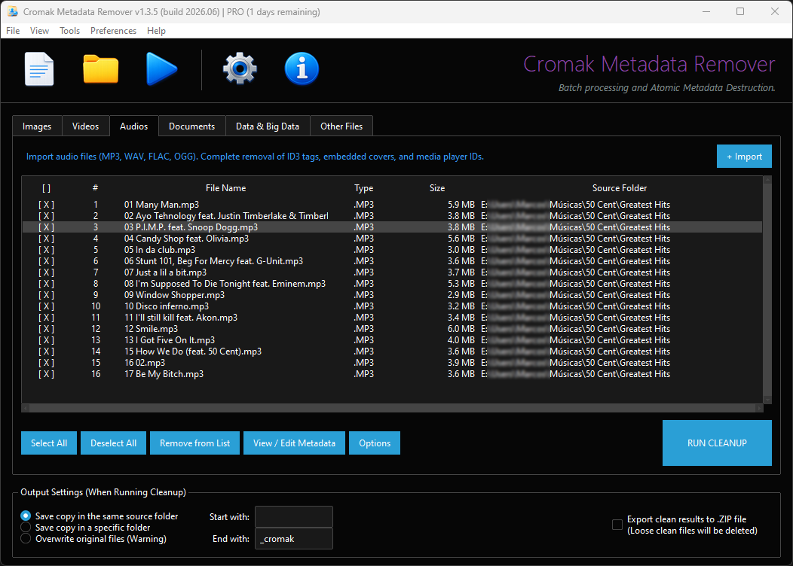
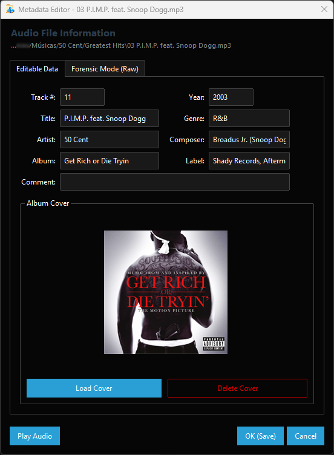
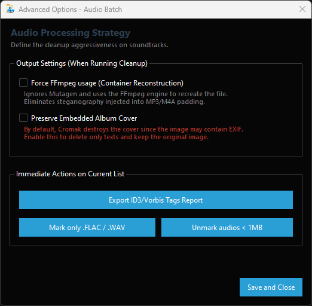
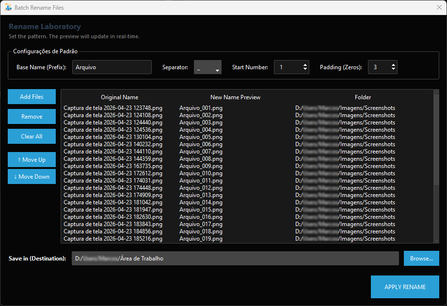
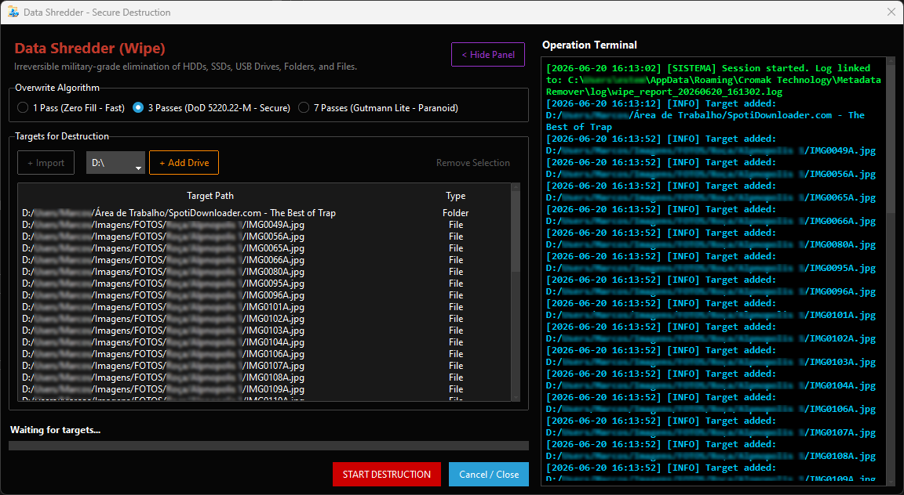

Cromak Metadata Remover
The primary forensic sanitization engine for high-security environments.
Version: 1.4.0 (build 2026.11) | Batch Processing and Atomic Destruction

Forensic Engineering & I/O
Matrix Core does not perform superficial deletions. It acts on the structural layer of files and direct hard drive I/O to obliterate any possibility of reverse forensics.
-
Invisible Ink Hunter (PyMuPDF)
PDF documents often hide corporate trackers. The engine visually scans the page and applies a definitive black bar over microscopic or camouflaged white texts on white backgrounds.
-
Recursive Cleanup (Office Matryoshka)
The system extracts the XML tree from Word and Excel files, cleans the revision history, and wipes the EXIF (GPS) data from photographs previously pasted inside the document.
-
Container Reconstruction (FFmpeg)
Bypasses superficial cleaning methods and forces the use of the FFmpeg engine to recreate audio and video files bit by bit, eliminating steganography injected into the 'padding' of MP3, M4A, or MP4.
-
Steganography Breaking (LSB Resampling)
Resamples the pixel matrix of graphic files invisibly. This micro-adjustment destroys steganographic data, texts, and malicious files hidden in the least significant bit (LSB) of images.
-
MAC Times Masking (OS Level)
The sanitization physically recreates the file to destroy Windows Alternate Data Streams (ADS) and forces the creation/modification dates to the exact moment of cleanup, camouflaging the intervention.
-
Shadow Copies Purge (VSS)
Injects elevated privilege commands into the operating system to locate and annihilate the Volume Shadow Copy Service. Ensures that older versions of metadata cannot be recovered through system restoration.


Native Support for 11 Languages
Designed for global high-security environments. With a real-time internationalization engine (JSON-based), the software dynamically adapts the entire interface, context menus, forensic logs, and operation terminals to the operator's exact language.
Integrated Labs & Modules
Explore the Matrix Core Engine interface. From MAC Times masking to video container reverse engineering, inspect each module of the forensic system.

Image Inspector
Edit or inject logical data like Camera Manufacturer and Model. Control aggressiveness levels with options to maintain aspect ratio without deforming the image.

Forensic Mode (Raw EXIF)
View the pure hexadecimal dump of the image header. The system reveals deeply rooted data before you authorize annihilation.

Matrix Routing
Heavy batch management. Filter files by extension or size and apply atomic cleanup across multiple directories simultaneously.

Audio Sanitization
Complete destruction of ID3/Vorbis tags. Decide whether to preserve or purge embedded album covers that may carry GPS traces via EXIF.
Document Engines
Adjust advanced triggers. Activate the 'Invisible Ink Hunter' for PDFs or the Recursive Matryoshka Cleanup to scan the Word and Excel XML tree.
Authorship Reports
Access advanced options to extract and export complete dossiers on authorship, modification history, and keywords injected into corporate documents.

Media Reconstruction
Enable forced FFmpeg engine injection to bypass standard libraries, destroying steganography by rebuilding media containers bit by bit.

Renaming Laboratory
Don't let confidential data leak into file names. Physically rename entire batches on the disk by applying sequential patterns (E.g.: Evidence_001).

Data Shredder (Wiping)
Real-time terminal. Track military injection (DoD 5220.22-M Algorithm), SHA-256 signature generation, and the purging of Windows Shadow Copies.
⚠ Military Wiping & Data Shredder
Cromak incorporates irreversible destruction algorithms (DoD 5220.22-M and Gutmann). If Military Wiping is enabled in preferences, the original file is not just sent to the recycle bin or logically deleted; it undergoes random byte injection directly onto the hard drive before deletion.
This fragments the data at a magnetic/flash level, making physical reconstitution impossible even for corporate or governmental forensic software (such as Recuva or EnCase).
WARNING: Atomic destruction is irreversible. Creating backups before batch processing is the operator's responsibility.
Choose Your Security Level
Unlock full access to Cromak Metadata Remover's forensic engines.
Free Plan
- Basic Audio and Video Cleanup
- Multilingual Interface
- Document Scan Blocked
- Image Cleanup Blocked
- Military Wiping Inactive
- No Updates
- No Technical Support
Personal Monthly
- 1 Machine License
- Deep PDF Cleanup (Invisible Ink)
- Active Office Matryoshka Engine
- Physical Destruction (Military Wiping)
- MAC Times Masking
- Minimal Technical Support
- No Version Updates
Personal Annual
- Up to 3 Machine Licenses
- All Forensic Engines Unlocked
- Guaranteed Software Updates
- Priority Tech Support
- Ideal for small offices
- Equals only $ 2.90/month
Lifetime License
- Up to 5 Machine Licenses
- One-time payment, yours forever
- Lifetime Updates Included
- Early access to new modules
- Premium Tech Support (Direct to DEV)
- Free of monthly fees
Enterprise
- Starting at 10 Licenses
- Corporate Invoice
- Guided Implementation
- Corporate Updates
- VIP Support (Guaranteed SLA)
- Batch Security Consulting
🔒 Encrypted Transaction & Immediate Licensing
Your Hardware ID license will be generated immediately after payment confirmation with support.
System Specifications
- Operating System Windows 10 / Windows 11 (64-bit architecture only)
- Processor Multi-core 1.5 GHz or higher (Intel / AMD)
- RAM Memory 4 GB (8 GB recommended for heavy video batches)
- I/O Storage NVMe SSD recommended for maximum Wiping speed
- Privacy 100% Local Processing. No data is sent to the cloud.